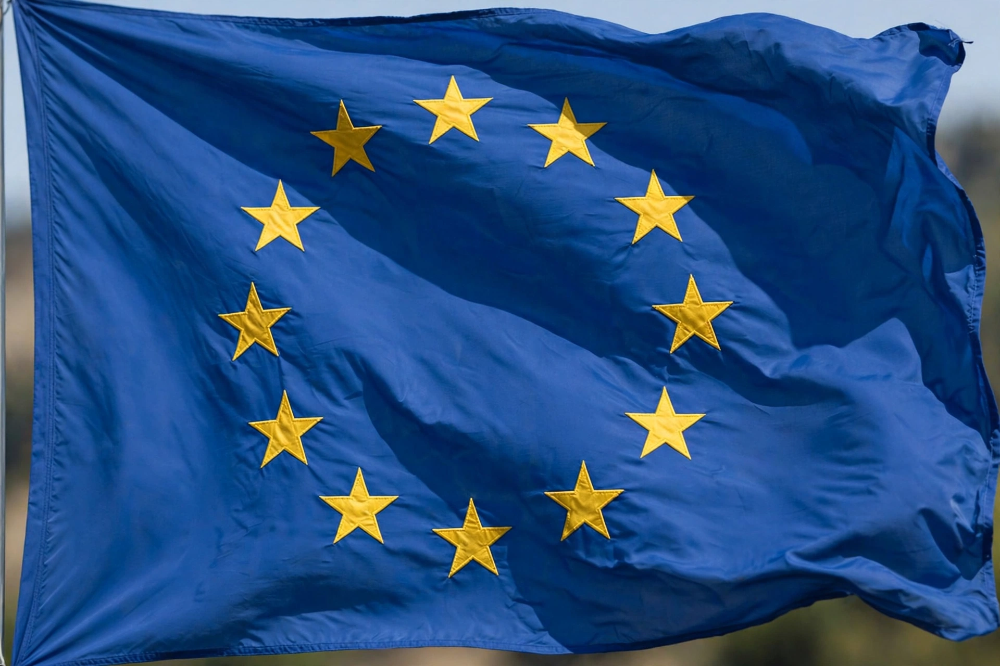

| European Union | |
 Flag of Europe | |
| Type | Political and economic union |
|---|---|
| Member states | 27 |
| Established | 1 November 1993 (Maastricht Treaty) |
| Population | approx. 450 million |
| Currency | Euro (€) in 20 member states |
| Institutions | European Commission, European Parliament, European Council, Council of the EU, Court of Justice, European Central Bank |
The European Union (EU) is a supranational political and economic union of 27 member states located primarily in Europe. It has a total population of about 450 million and operates through a hybrid system of intergovernmental and supranational institutions. The EU's single market guarantees the free movement of goods, capital, services, and people, and 20 of its members share the euro currency.
European integration began after the Second World War to bind former enemies together, starting with the European Coal and Steel Community (1951) founded by France, West Germany, Italy, Belgium, the Netherlands, and Luxembourg. The Treaty of Rome (1957) created the European Economic Community. The Maastricht Treaty (1993) formally established the European Union and paved the way for the euro, launched in 1999. Successive enlargements brought in most of Central and Eastern Europe. The United Kingdom, a member since 1973, voted to leave in 2016 and withdrew on 31 January 2020 ("Brexit").
The European Commission proposes legislation and acts as the executive; the European Parliament, directly elected every five years, shares legislative power with the Council of the European Union representing member governments. The European Council of heads of state or government sets strategic direction. EU law has primacy over national law in its fields of competence, interpreted by the Court of Justice of the European Union in Luxembourg.
The EU is one of the world's largest economies. Its policies span trade, agriculture, fisheries, regional development, climate and energy, digital regulation, and competition. The Schengen Area abolishes internal border checks among 27 European countries, most of them EU members. The Union also runs the world's largest single aid programme and common foreign and security policy, though defence remains largely national.